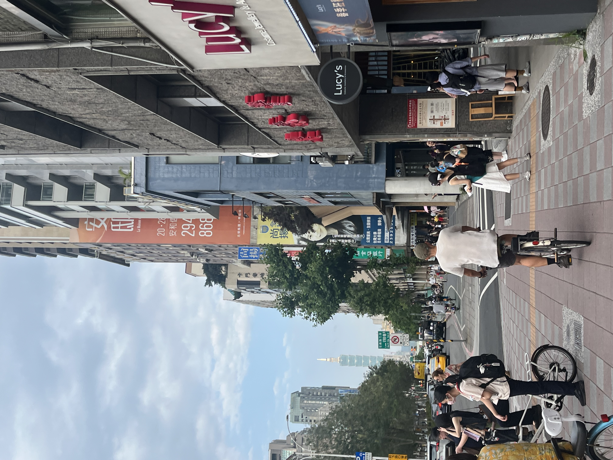
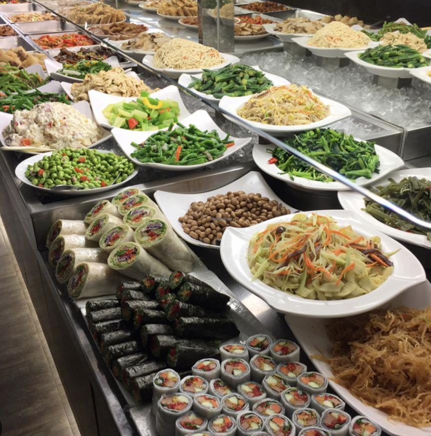
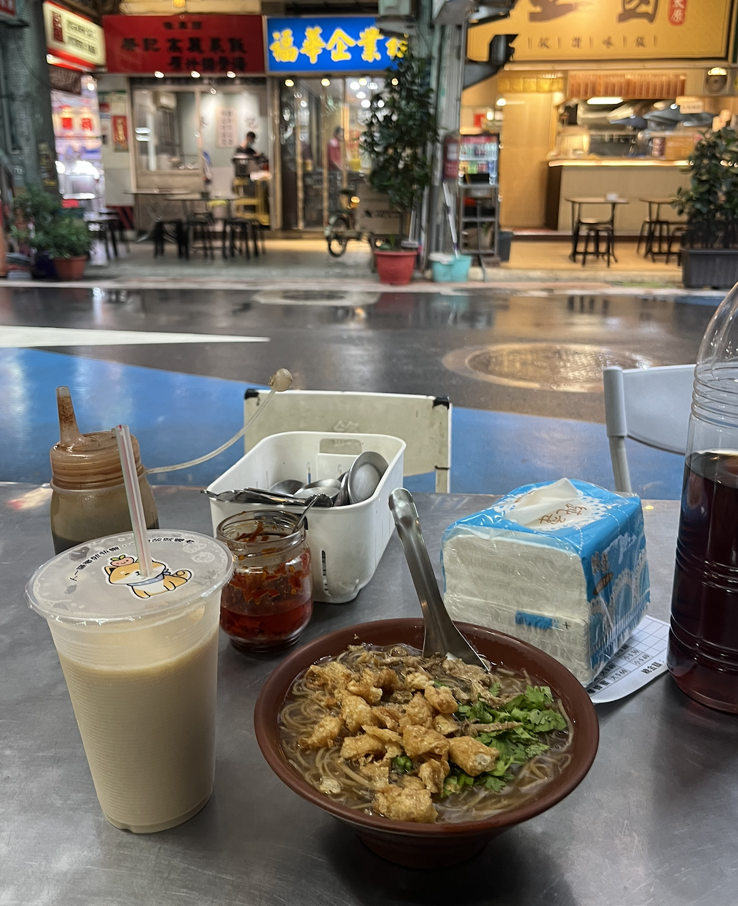
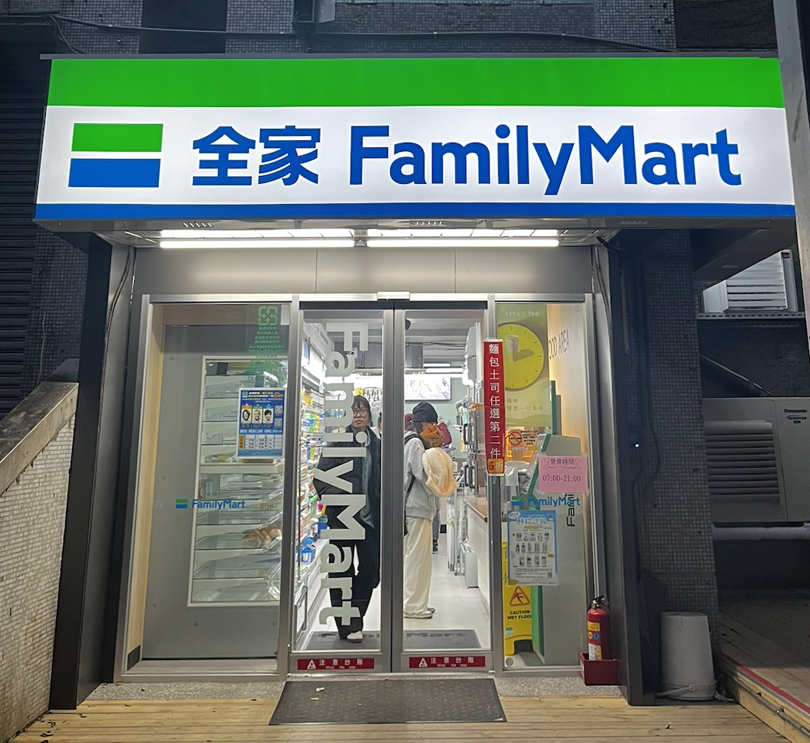
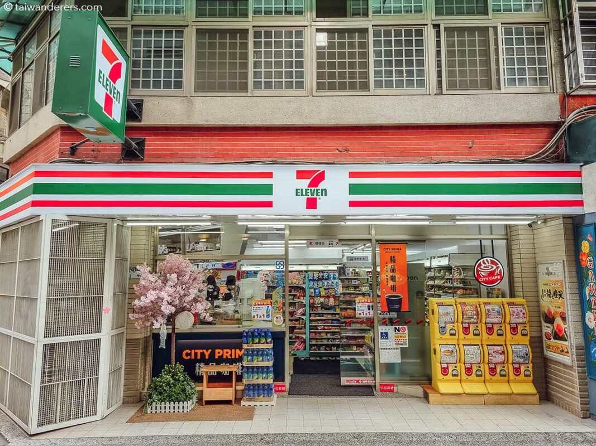
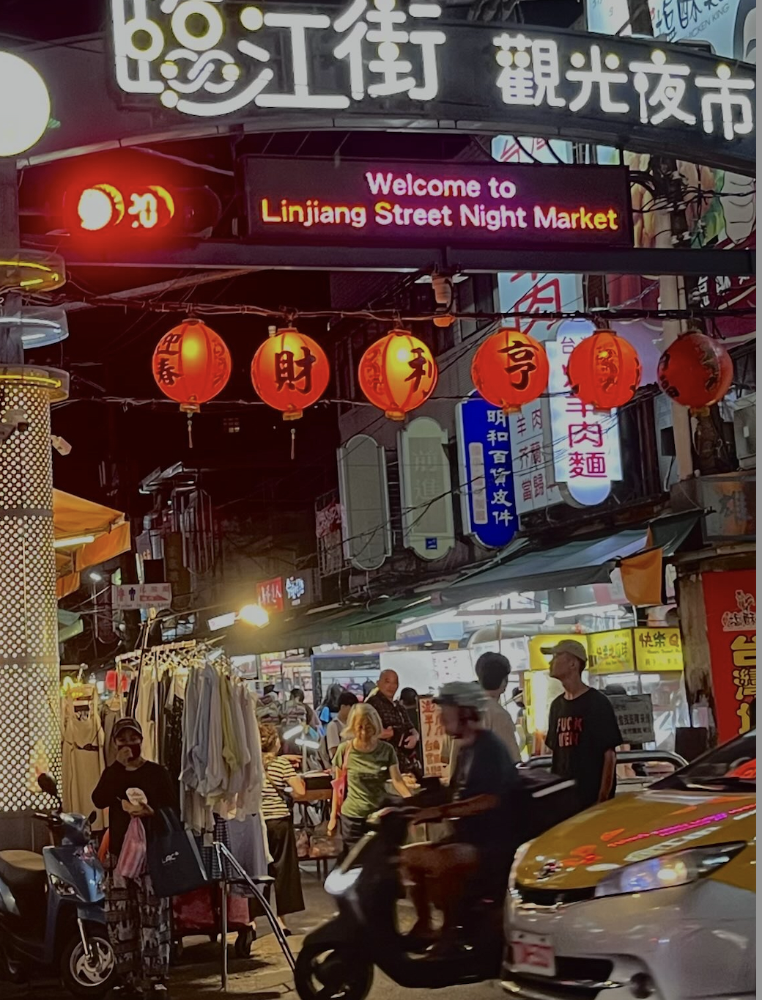
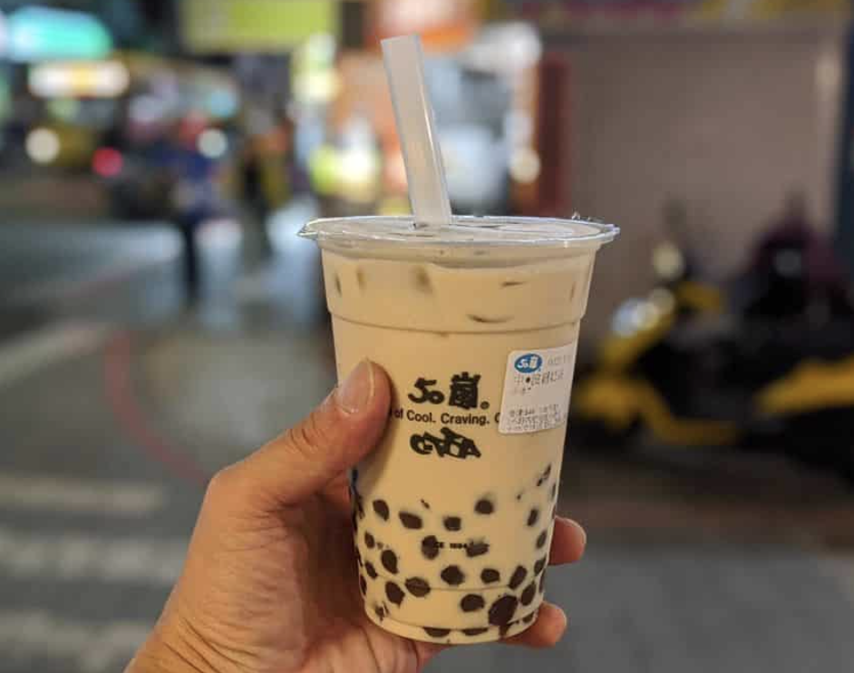
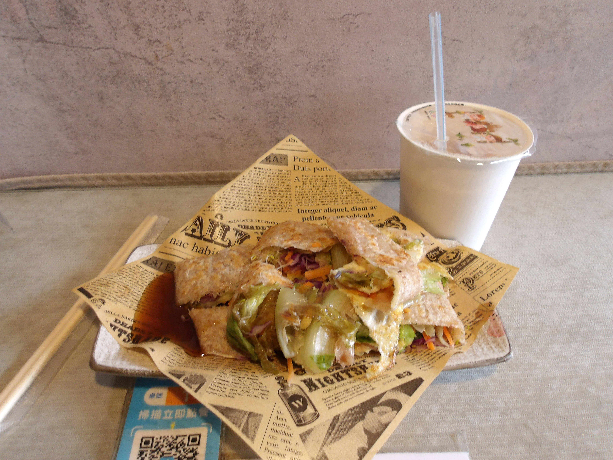
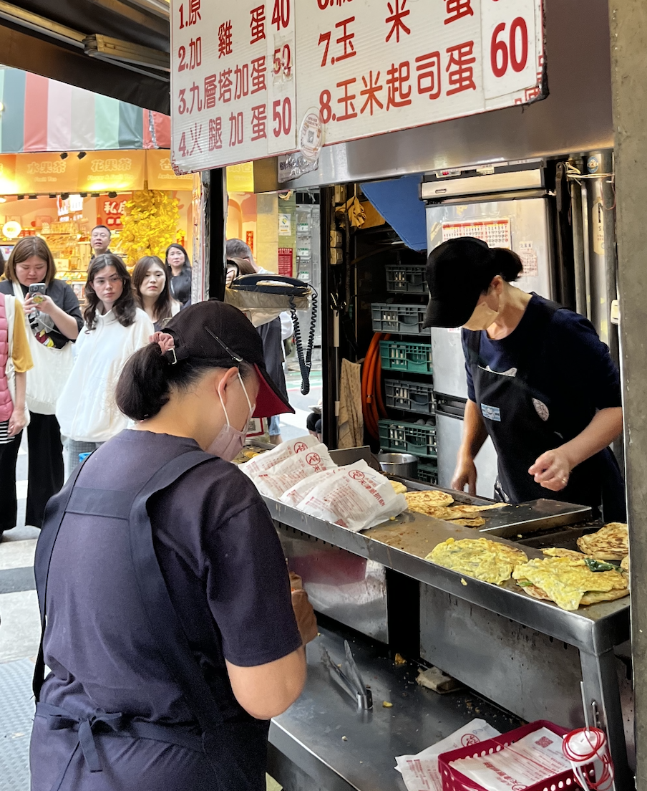
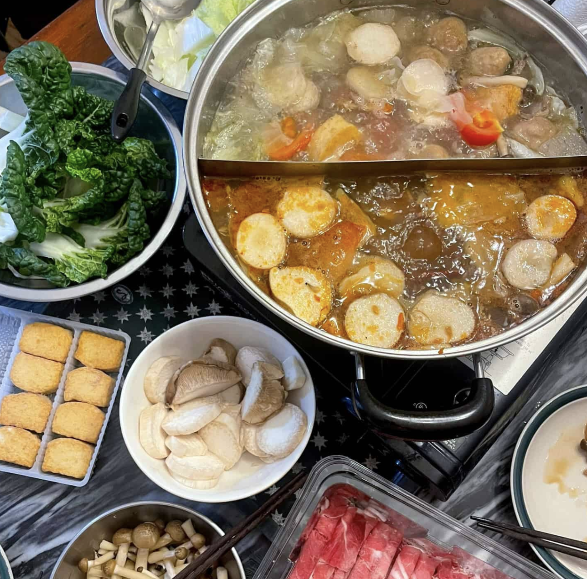

Leben in Taipei
Wohnen & Essen
Praktische Einblicke in meinen Alltag in Taipei – von meiner WG bis zu meinen Lieblingsorten zum Essen.

Meine Unterkunft
Wohnen im Da’an District
Während meines Auslandsjahres wohnte ich in einer WG mit zwei Mitbewohnerinnen, die ebenfalls Studentinnen waren, allerdings an anderen Universitäten.
Die Wohnung lag im Da’an District, nur etwa 15 Minuten von der NTUT entfernt. Die Lage war für mich ideal, weil ich schnell an der Universität und gleichzeitig sehr zentral in Taipei war.
Da’an District
ca. 15 Min. zur NTUT
ca. 13.000 NTD / Monat · etwa 350 €
WG mit zwei Mitbewohnerinnen
Mein Tipp
Ich würde Da’an auf jeden Fall empfehlen. Für mich ist es eine der schönsten Gegenden Taipeis und gleichzeitig sehr zentral. In der Umgebung gibt es viele Cafés, Restaurants, Parks und gute Verkehrsanbindungen.
Wohnungssuche
Wo finde ich eine Unterkunft?
Meine WG habe ich über eine Facebook-Gruppe gefunden. Viele internationale Studierende suchen dort nach Zimmern und WGs. Eine weitere Möglichkeit ist RoomsAbroad.
FOOD DIARY · TAIWAN
Essen in Taiwan
Von vegetarischen Buffets bis zu traditionellen Night Markets – hier teile ich einige meiner kulinarischen Erfahrungen in Taiwan.
Vegetarisches Essen
In Taipei gibt es viele vegetarische Restaurants und Buffets mit einer großen Auswahl an Gerichten.


Convenience Stores
7-Eleven und FamilyMart gehören zum Alltag in Taiwan. Hier findet man Snacks, Getränke und schnelle Mahlzeiten.


Night Markets
Night Markets sind ein wichtiger Teil der taiwanischen Esskultur. Dort kann man zahlreiche lokale Spezialitäten entdecken.

Meine Favoriten
Diese Spezialitäten gehörten zu meinen persönlichen Favoriten während meines Auslandsjahres.



